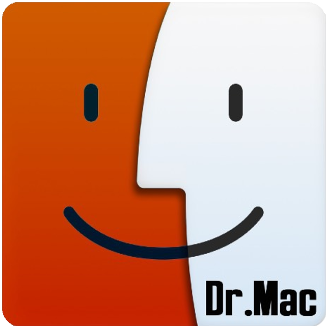

About Me
I am a PhD student in computer science at University of Maryland Baltimore County, advised by Hamed Pirsiavash. Before this, I got my BS in computer science from Sharif University of Technology.
Get my CV.
My research is about machine learning,computer vision. In particular, I am intrested in
self-supervised learning.

My Experiences
I worked at BasirTech as a computer vision researcher under the supervision of Prof
Mostafa Kamali Tabrizi. My project was about Real-time Virtual Advertising in Broadcast systems.
You can watch the results of my project in my YouTube channel.
I was Teacher-Assistant for the Computer Graphics course at Sharif University for Spring 2018 semester. I designed students assignments and created a webpage for
their assignments. You can visit it here..
During the first and second years of University in Sharif, one of my friends and I started a start-up. We developed some applications in iOS/Android. You can download
one of our games from here.